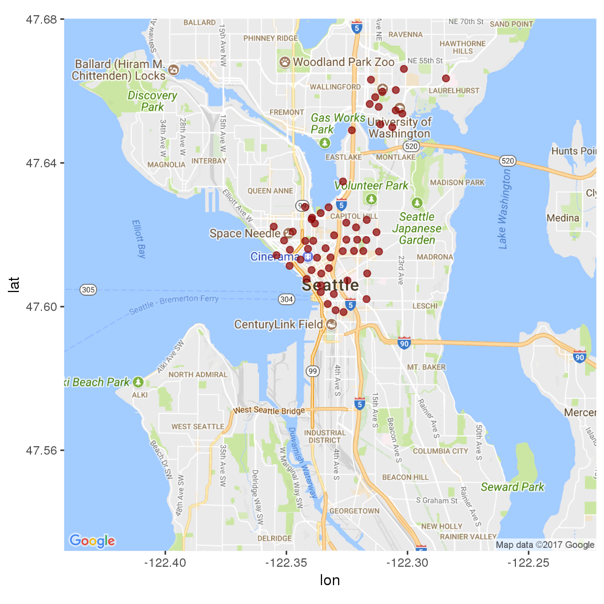
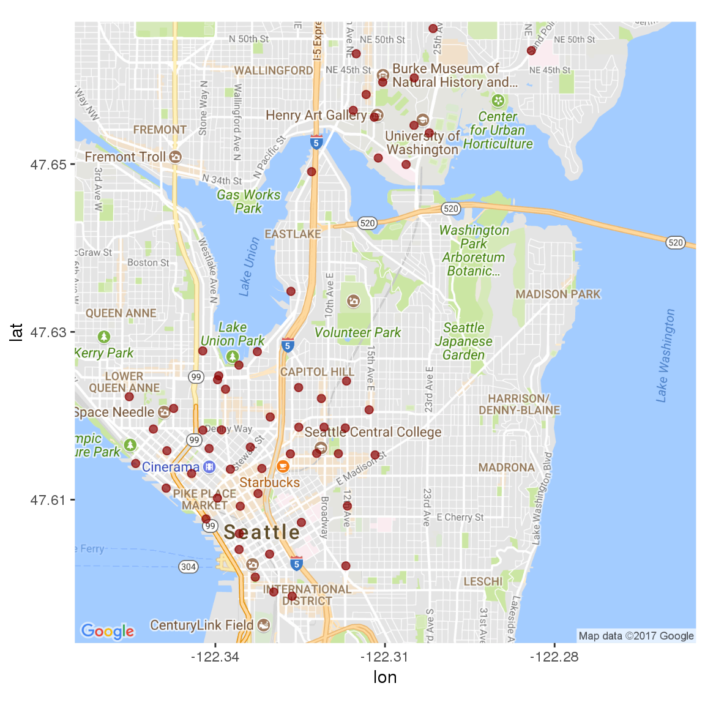
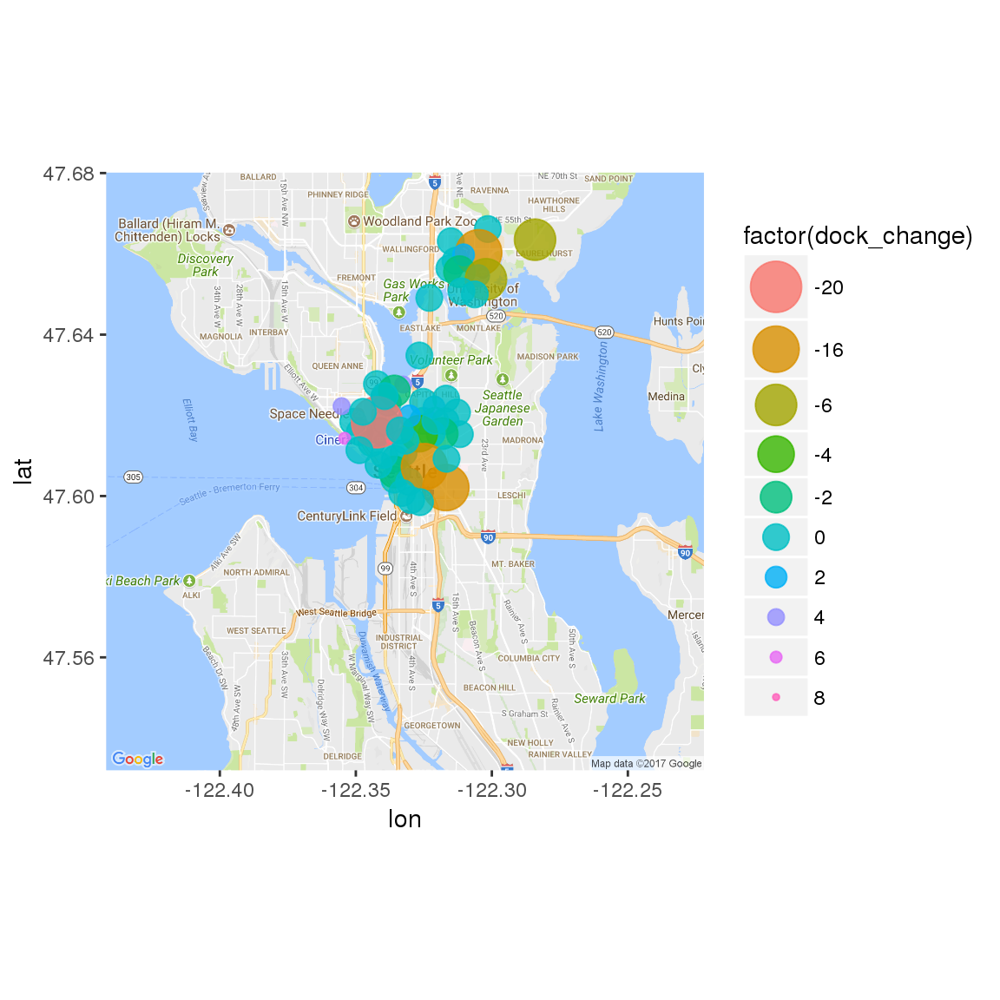
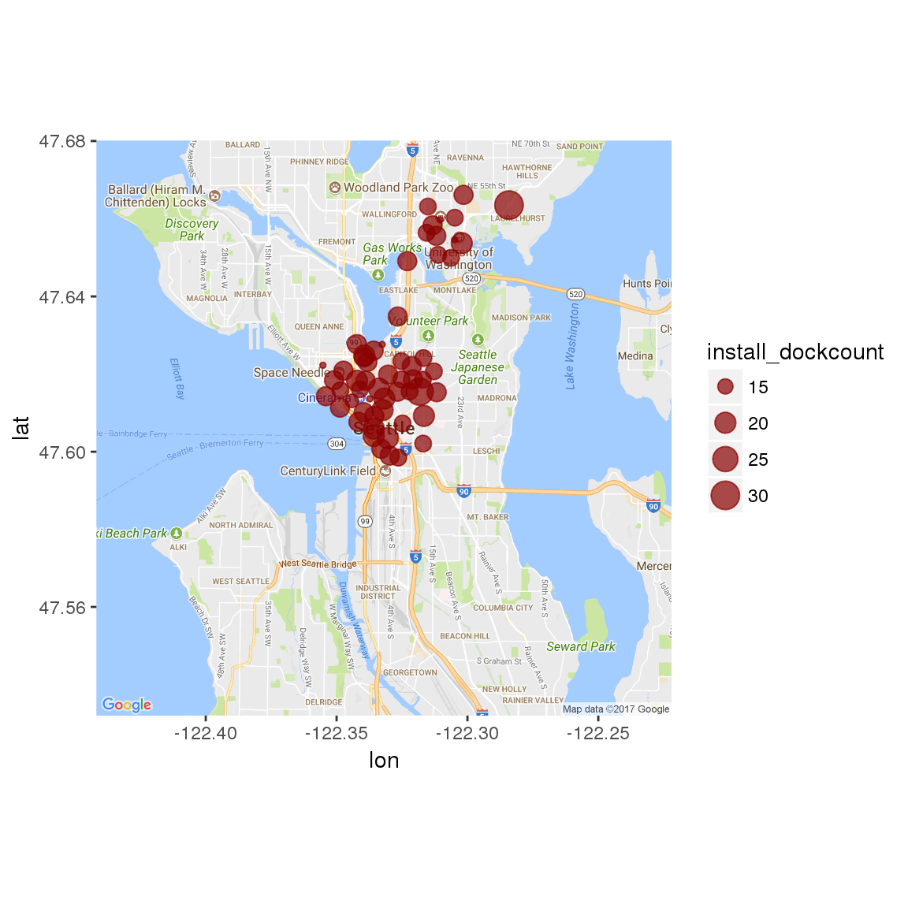
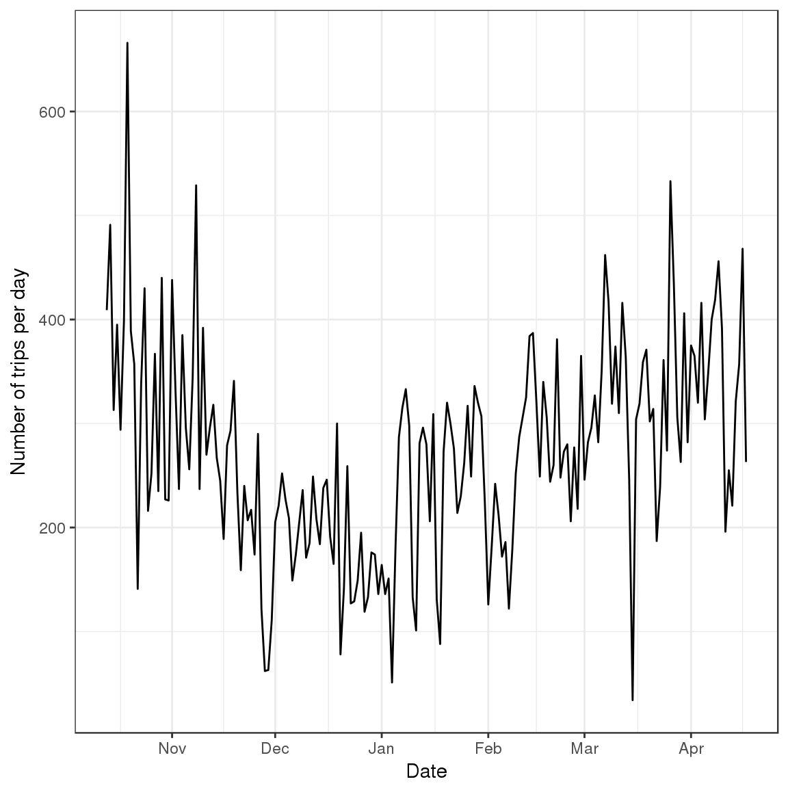
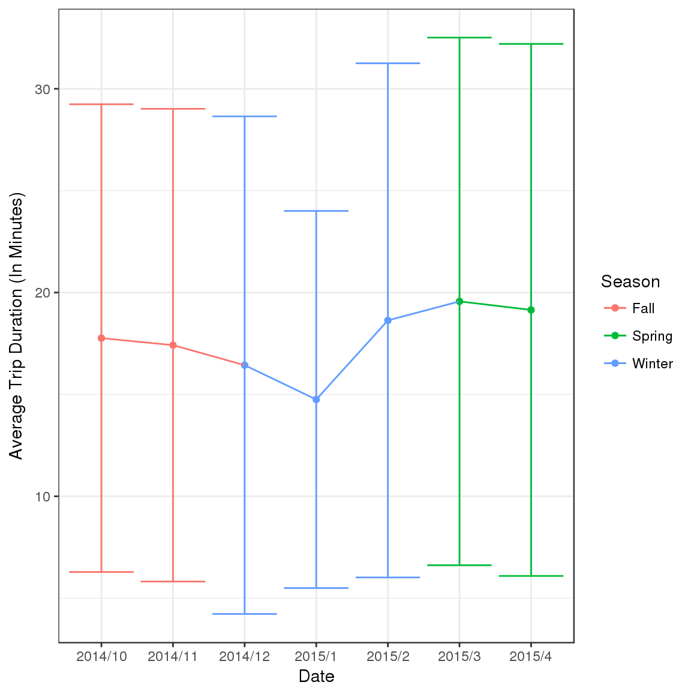

Bicycle Sharing in Seattle
Samantha Widman, Cathryn Wheeler, Xan Hendrix, Lauren Murray
Nov 07 2017
Introduction
This is an exploration of bicycle-sharing data in the city of Seattle, WA (USA) from October 2014-August 2016. I hope to eventually combine this data with other forms of ride-sharing and transportation in the city, but this will be the first step.
Time to get started!
Loading Necessary Packages
# For data manipulation and tidying
library(dplyr)
library(lubridate)
library(tidyr)
# For mapping
library(ggmap)
library(mapproj)
# For data visualizations
library(ggplot2)
# For modeling and machine learning
library(caret)Importing Data
All of the data can be downloaded from the bicycle-sharing service “Pronto!”’s website or from Kaggle. This project contains 3 data sets and I’ll import and inspect each data file independently.
station <- read.csv(file = "station.csv", header = TRUE,
stringsAsFactors = FALSE)
trip <- read.csv(file = "trip.csv", header = TRUE,
stringsAsFactors = FALSE)
weather <- read.csv(file = "weather.csv", header = TRUE,
stringsAsFactors = FALSE)Okay, let’s take a look at each of these data files.
Data Structures and Variables
Station
## Observations: 58
## Variables: 9
## $ station_id <chr> "BT-01", "BT-03", "BT-04", "BT-05", "CBD-03"...
## $ name <chr> "3rd Ave & Broad St", "2nd Ave & Vine St", "...
## $ lat <dbl> 47.61842, 47.61583, 47.61609, 47.61311, 47.6...
## $ long <dbl> -122.3510, -122.3486, -122.3411, -122.3442, ...
## $ install_date <chr> "10/13/2014", "10/13/2014", "10/13/2014", "1...
## $ install_dockcount <int> 18, 16, 16, 14, 20, 18, 20, 20, 20, 18, 16, ...
## $ modification_date <chr> "", "", "", "", "", "", "", "11/9/2015", "",...
## $ current_dockcount <int> 18, 16, 16, 14, 20, 18, 20, 18, 20, 18, 0, 1...
## $ decommission_date <chr> "", "", "", "", "", "", "", "", "", "", "8/9...Looks like this dataset is dealing with 9 variables:
- Station ID : The individual ID number for a bike station
- Name : The name of that station ID, also appears to be the rough location of the station
- Latitude : The latitude of the station
- Longitude : The longitude of the station
- Install Date : When that particular station was installed (in MM/DD/YYYY format)
- Install Dock Count : Number of docks (bike positions) available at each station on installation day
- Modification Date : When a particular station was modified (in MM/DD/YYYY format)
- Current Dock Count : Number of docks (bike positions) available at each station on August 31, 2016
- Decommission Date : The date that a particular station was put out of service (in MM/DD/YYYY format)
Trip
## Observations: 50,793
## Variables: 12
## $ trip_id <int> 431, 432, 433, 434, 435, 436, 437, 438, 439,...
## $ starttime <chr> "10/13/2014 10:31", "10/13/2014 10:32", "10/...
## $ stoptime <chr> "10/13/2014 10:48", "10/13/2014 10:48", "10/...
## $ bikeid <chr> "SEA00298", "SEA00195", "SEA00486", "SEA0033...
## $ tripduration <dbl> 985.935, 926.375, 883.831, 865.937, 923.923,...
## $ from_station_name <chr> "2nd Ave & Spring St", "2nd Ave & Spring St"...
## $ to_station_name <chr> "Occidental Park / Occidental Ave S & S Wash...
## $ from_station_id <chr> "CBD-06", "CBD-06", "CBD-06", "CBD-06", "CBD...
## $ to_station_id <chr> "PS-04", "PS-04", "PS-04", "PS-04", "PS-04",...
## $ usertype <chr> "Member", "Member", "Member", "Member", "Mem...
## $ gender <chr> "Male", "Male", "Female", "Female", "Male", ...
## $ birthyear <int> 1960, 1970, 1988, 1977, 1971, 1974, 1978, 19...This dataset appears to contain 12 variables:
- Trip ID : An identification number assigned to each trip (from one bike station to another)
- Start Time : The time and date that a bike was borrowed from a station (in MM/DD/YYYY HH:MM format)
- Stop Time : The time and date that a bike was returned to a station (in MM/DD/YYYY HH:MM format)
- Bike ID : The identification number for a specific bike
- Trip Duration : Time of trip (measured in seconds)
- From Station Name : The name of the station where the bike was borrowed from
- To Station Name : The name of the station where the bike was returned to
- From Station ID : The ID number of the station where the bike was borrowed from
- To Station ID : The ID number of the station where the bike was returned to
- User Type : Indicates whether the user was a “Member” (i.e., someone with a monthly or annual membership to Pronto!) or a “Short-Term Pass Holder” (i.e., someone who purchased a 24 hour or 3 day pass)
- Gender : The gender of the rider (if known)
- Birth Year : The year that the rider was born
Weather
## Observations: 689
## Variables: 21
## $ Date <chr> "10/13/2014", "10/14/2014", "10/15/...
## $ Max_Temperature_F <int> 71, 63, 62, 71, 64, 68, 73, 66, 64,...
## $ Mean_Temperature_F <int> 62, 59, 58, 61, 60, 64, 64, 60, 58,...
## $ Min_TemperatureF <int> 54, 55, 54, 52, 57, 59, 55, 55, 55,...
## $ Max_Dew_Point_F <int> 55, 52, 53, 49, 55, 59, 57, 57, 52,...
## $ MeanDew_Point_F <int> 51, 51, 50, 46, 51, 57, 55, 54, 49,...
## $ Min_Dewpoint_F <int> 46, 50, 46, 42, 41, 55, 53, 50, 46,...
## $ Max_Humidity <int> 87, 88, 87, 83, 87, 90, 94, 90, 87,...
## $ Mean_Humidity <int> 68, 78, 77, 61, 72, 83, 74, 78, 70,...
## $ Min_Humidity <int> 46, 63, 67, 36, 46, 68, 52, 67, 58,...
## $ Max_Sea_Level_Pressure_In <dbl> 30.03, 29.84, 29.98, 30.03, 29.83, ...
## $ Mean_Sea_Level_Pressure_In <dbl> 29.79, 29.75, 29.71, 29.95, 29.78, ...
## $ Min_Sea_Level_Pressure_In <dbl> 29.65, 29.54, 29.51, 29.81, 29.73, ...
## $ Max_Visibility_Miles <int> 10, 10, 10, 10, 10, 10, 10, 10, 10,...
## $ Mean_Visibility_Miles <int> 10, 9, 9, 10, 10, 8, 10, 10, 10, 6,...
## $ Min_Visibility_Miles <int> 4, 3, 3, 10, 6, 2, 6, 5, 6, 2, 10, ...
## $ Max_Wind_Speed_MPH <int> 13, 10, 18, 9, 8, 10, 10, 12, 15, 1...
## $ Mean_Wind_Speed_MPH <int> 4, 5, 7, 4, 3, 4, 3, 5, 8, 8, 9, 4,...
## $ Max_Gust_Speed_MPH <chr> "21", "17", "25", "-", "-", "-", "1...
## $ Precipitation_In <dbl> 0.00, 0.11, 0.45, 0.00, 0.14, 0.31,...
## $ Events <chr> "Rain", "Rain", "Rain", "Rain", "Ra...This dataset represents quite a bit of weather data in 21 variables.
- Date : The date in MM/DD/YYYY format
- Max Temperature F : The maximum temperature that day (in degrees F)
- Mean Temperature F : The average temperature that day (in degrees F)
- Min Temperature F : The minimum temperature that day (in degrees F)
- Max Dew Point F : The maximum dew point (in degrees F)
- Mean Dew Point F : The average dew point (in degrees F)
- Min Dew Point F : The minimum dew point (in degrees F)
- Max Humidity : The maximum humidity (in %)
- Mean Humidity : The average humidity (in %)
- Min Humidity : The minimum humidity (in %)
- Maximum Sea Level Pressure : The maximum atmospheric pressure at sea level (in inches of mercury)
- Mean Sea Level Pressure : The average atmospheric pressure at sea level (in inches of mercury)
- Min Sea Level Pressure : The minimum atmospheric pressure at sea level (in inches of mercury)
- Max Visibility Miles : The maximum visibility (in miles)
- Mean Visibility Miles : The average visibility (in miles)
- Min Visibility Miles : The minimum visibility (in miles)
- Max Wind Speed MPH : The maximum sustained wind speed (in miles per hour)
- Mean Wind Speed MPH : The average sustained wind speed (in miles per hour)
- Max Gust Speed MPH : The maximum gust wind speed (in miles per hour)
- Precipitation : The amount of precipitation (measured in inches)
- Events : Weather events that occurred that day (e.g., rain, fog, snow, thunderstorm etc.)
Data Visualizations
Exploring the Stations Dataset
Since the “Stations” dataset was the first one I imported, let’s start with a little exploration there. First of all, how many unique stations are we dealing with?
station %>% summarise(n_distinct(station_id))## n_distinct(station_id)
## 1 58Wow! 58 different stations! Let’s take a quick peek at where they are located.
station_locs <- station %>% group_by(station_id) %>% select(1:4,
-2)# Load the correct map
mymap <- get_map(location = "Seattle", maptype = "roadmap", zoom = 12)
# Plot a single point for each Station ID
ggmap(mymap) + geom_point(aes(x = long, y = lat), data = station_locs,
alpha = 0.7, color = "darkred", size = 2)
So it looks like all of the stations are located near the Lower Queen Anne, Belltown, International District, Capitol Hill and University of Washington areas. Let’s take a more zoomed-in look.
## Map from URL : http://maps.googleapis.com/maps/api/staticmap?center=47.63,-122.31&zoom=13&size=640x640&scale=2&maptype=roadmap&language=en-EN&sensor=false
Great! So the locations are pretty well clustered. I wonder what order they were added in.
Station Installations
First, let’s convert those character-string date objects to actual dates using the lubridate package.
station$install_date <- mdy(station$install_date)
# How many times were new stations installed?
station %>% summarise(n_distinct(install_date)) n_distinct(install_date)
1 9# How many stations were installed on each date?
station %>% group_by(install_date) %>% summarise(count = n()) %>%
arrange(install_date)# A tibble: 9 x 2
install_date count
<date> <int>
1 2014-10-13 50
2 2015-05-22 1
3 2015-06-12 1
4 2015-07-27 1
5 2015-09-15 1
6 2015-10-29 1
7 2016-03-18 1
8 2016-07-03 1
9 2016-08-09 1It looks like the vast majority (86%) of the stations were added on opening day. Let’s see where those original ones were and where the rest were added.
So they added more stations throughout the district that they serve, instead of adding several new stations to a single neighborhood all at once. Good to know.
Now, I wonder how many bikes can be parked at each station (as of August 31,2016)?

Well that’s weird, some of the stations have a dock count of 0. I’m assuming they didn’t start that way. Let’s calculate the change in dock count from station installation to August 31, 2016 and plot it on a map.
Change in Number of Bike Docks Per Station
Any stations with no change in number of docks are not shown here.
Wow! Looks like quite a few stations took away bike docks and none gained any. Perhaps those stations weren’t being used very frequently. We’ll have to look at that a bit later
Current Station Size
I’m going to take one quick look at the current size of each station before moving on to the next dataset. Note: I did not include any stations that were closed as of August 31, 2016 in this map
ggmap(mymap) + geom_point(aes(x = long, y = lat, size = install_dockcount), data = station,
alpha = 0.7, color = "darkred")
So it looks like the biggest stations tend to be on the outskirts of the rest. Where there are several stations in close proximity, there tend to be fewer bike docks at each station. That makes sense, logically speaking. If you go to a station and there is no bike to rent, you can easily go to another nearby, assuming there is another nearby. In areas where the stations are more secluded, it’s more important that there be bikes and open spaces readily available for users.
Alright, I’m feeling good about exploring this dataset. Time to check out the trip dataset!
Exploring the Trips Dataset
It’s been a while since we’ve looked at the trip dataset, so let’s take another peek at it here.
glimpse(trip)## Observations: 50,793
## Variables: 12
## $ trip_id <int> 431, 432, 433, 434, 435, 436, 437, 438, 439,...
## $ starttime <chr> "10/13/2014 10:31", "10/13/2014 10:32", "10/...
## $ stoptime <chr> "10/13/2014 10:48", "10/13/2014 10:48", "10/...
## $ bikeid <chr> "SEA00298", "SEA00195", "SEA00486", "SEA0033...
## $ tripduration <dbl> 985.935, 926.375, 883.831, 865.937, 923.923,...
## $ from_station_name <chr> "2nd Ave & Spring St", "2nd Ave & Spring St"...
## $ to_station_name <chr> "Occidental Park / Occidental Ave S & S Wash...
## $ from_station_id <chr> "CBD-06", "CBD-06", "CBD-06", "CBD-06", "CBD...
## $ to_station_id <chr> "PS-04", "PS-04", "PS-04", "PS-04", "PS-04",...
## $ usertype <chr> "Member", "Member", "Member", "Member", "Mem...
## $ gender <chr> "Male", "Male", "Female", "Female", "Male", ...
## $ birthyear <int> 1960, 1970, 1988, 1977, 1971, 1974, 1978, 19...Great, so there are quite a few things that we can potentially look at using this dataset by itself. Let’s start with the number of trips per day since Pronto! began opening bike stations. To do that, we need to recode our start date/times as POSIXct objects. We’ll use the lubridate package for this.
# Make the start and stop dates into POSIXct objects
trip_2 <- trip %>% mutate(start_dt = mdy_hm(starttime), stop_dt = mdy_hm(stoptime))
# Recode the dates
trip_2 <- trip_2 %>% mutate(start_date = paste(month(start_dt),
day(start_dt), year(start_dt), sep = "/"))
trip_2$start_date <- mdy(trip_2$start_date)
trip_2 <- trip_2 %>% mutate(stop_date = paste(month(stop_dt),
day(stop_dt), year(stop_dt), sep = "/"))
trip_2$stop_date <- mdy(trip_2$stop_date)Great! Time to visualize the number of rides per day.

Hmm, grouping by day is a little noisy. Perhaps we should try by month?
Plotting Trips Per Month (By Season)
First, we need to create a “Year-Month” variable
start_date_ym <- trip_2 %>% mutate(ym = paste(year(start_date),
month(start_date), sep = "/"), Season = ifelse(ym %in% c("2014/10", "2014/11"), "Fall", ifelse(ym %in% c("2014/12", "2015/1", "2015/2"), "Winter", ifelse(ym %in% c("2015/3", "2015/4", "2015/5"), "Spring", "Summer"))))Now plot. I think I’ll plot this by month but color it by season (where December, January, and February are “winter”, March, April, and May are “spring”, June, July, August are “summer”, and September, October, November are “autumn”)

Well that intuitively makes sense. The number of trips taken per month increases in the spring, reaches a maximum in the summer, declines through the fall, remains fairly stable in the winter and then repeats.
Average Trip Duration
Great! I wonder how the average trip duration fluctuates over this time period.
# Convert Trip Duration from Seconds to Minutes
Trip_Duration_Month <- start_date_ym %>% mutate(trip_duration_min = tripduration/60) %>%
group_by(ym) %>% select(ym, trip_duration_min, Season) %>% summarise(Avg = mean(trip_duration_min),
sd = sd(trip_duration_min)) %>% mutate(se = sd/sqrt(n()),Season = ifelse(ym %in% c("2014/10", "2014/11"), "Fall", ifelse(ym %in% c("2014/12", "2015/1", "2015/2"), "Winter", ifelse(ym %in% c("2015/3", "2015/4", "2015/5"), "Spring", "Summer"))))
ggplot(Trip_Duration_Month,aes(x = ym, y = Avg, color = Season)) + geom_point() + geom_line(aes(group = 1)) + labs(x = "Date", y = "Average Trip Duration (In Minutes)") + theme_bw() + geom_errorbar(aes(ymin = Avg - se, ymax = Avg + se))There’s surprisingly not a huge range in trip durations here.
The little bit of variation here makes logical sense. Longer trips were being taken in the spring and summer months rather than the fall and winter. It’s also notable that the spring and summer of 2016 may have shown fewer trips than the previous year, show a slight increase in average trip length.
Number of Trips by Day of Week
I wonder if people are using this service to commute to/from work. Let’s look at the number of trips by day of the week.
First, let’s create a Day of the Week variable.
start_date_ym$wd <- wday(start_date_ym$start_date, label = TRUE)Now to plot the total number of trips by day of the week.
Ok, so there are definitely more trips during the week than on the weekends. I wonder if this varies by season too.
start_date_ym%>%
group_by(wd, Season) %>%
summarize(N = n()) %>%
ggplot(aes(x = wd, y = N, color = Season, group = Season)) + geom_point() + geom_line() + labs(x = "Day of the Week", y = "Number of trips") + theme_bw()
So it looks like usage is relatively consistent across seasons, at least as far as the number of trips are concerned.
Number of Trips by Time of Day
How about time of day? Are people using these around commuting times during the week and later on weekends?
Wow, looks like regardless of the season, people are commuting to/from work using this service (there’s a spike between 8 and 10 AM and another between 4 and 7 PM Monday through Friday). But the weekends seem to be popular between 10 AM and 10 PM.
Copyright © 2017 Lauren Murray. All rights reserved.